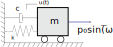
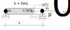

Spring-mass-damper system example
ODE System definition
In this example a simple spring-mass-damper system is considered. This simple problem is used to validate different implementations of truss and frame elements submitted to dynamic loads.
Analytic solution
The analytical solution is based on chapter 3 from Dynamics of Structures by Ray W. Clough and Joseph Penzien, Third Edition, 2003. The analytical solution of the problem is given by:
\[u(t) = \left( A_c \cos( \omega_D t ) + B \sin( \omega_D t ) \right) e^{ -\xi \omega_N t } + G_1 \cos( \bar{\omega} t ) + G_2 \sin( \bar{\omega} t )\]
where the notation and the parameters interpretation can be seen in the cited reference.
A set of numerical parameters must be defined to compute the analytic solution.
We start as all models, clearing the workspace and adding the ONSAS path to the work path.
close all;
if ~strcmp(getenv('TESTS_RUN'), 'yes')
clear all;
end
addpath(genpath([pwd '/../../src']));The following numeric parameters are considered.
k = 39.47; % spring constant
c = 2; % damping parameter
m = 1; % mass of the system
p0 = 40; % amplitude of applied load
u0 = 0.1; % initial displacement
du0 = 0.0; % initial velocityThen other parameters are computed:
omegaN = sqrt(k / m); % the natural frequency
xi = c / m / (2 * omegaN);
freq = omegaN / (2 * pi);
TN = 2 * pi / omegaN;
dtCrit = TN / pi;The frequency of the sinusoidal external force is set as:
omegaBar = 4 * omegaN;The analytic solution can be computed for specific cases as follows:
if (c == 0) && (p0 == 0) % free undamped solution
myAnalyticFunc = @(t) (u0 * cos(omegaN * t));
else % other cases solution
beta = omegaBar / omegaN;
omegaD = omegaN * sqrt(1 - xi^2); % forced and damped
G1 = (p0 / k) * (-2 * xi * beta) / ((1 - beta^2)^2 + (2 * xi * beta)^2);
G2 = (p0 / k) * (1 - beta^2) / ((1 - beta^2)^2 + (2 * xi * beta)^2);
Ac = u0 - G1;
B = (xi * omegaN * Ac - omegaBar * G2) / (omegaD);
myAnalyticFunc = @(t) ...
(Ac * cos(omegaD * t) + B * sin(omegaD * t)) .* exp(-xi * omegaN * t) + ...
G1 * cos(omegaBar * t) + G2 * sin(omegaBar * t);
endNumerical solutions
The analytic solution is used to validate two numerical solution approaches using different structural physical models, governed by the same ODE.
Numerical case 1: truss element model with Newmark method and lumped masses
In this case, a truss element is considered, as shown in the figure, with Young modulus, cross-section, area, mass, nodal damping and length corresponding to the parameters considered for the spring-mass-damper system
The scalar parameters for the equivalent truss model are:
l = 10;
A = 0.2;
rho = m * 2 / (A * l);
E = k * l / A;where the material of the truss was selected to set a mass $m$ at the node $2$.
assert(u0 < l, 'this analytical solution is not valid for this u0 and l0');Materials
materials = struct();
materials(1).modelName = 'elastic-rotEngStr';
materials(1).modelParams = [E 0];
materials(1).density = rho;Elements
In this case only 'node' and 'truss' elements are considered and the lumped inertial formulation is set for the truss element:
elements = struct();
elements(1).elemType = 'node';
elements(2).elemType = 'truss';
elements(2).elemCrossSecParams = {'circle', [sqrt(4 * A / pi)] };
elements(2).massMatType = 'lumped';Boundary conditions
The node $1$ is fixed, so the boundary condition set is:
boundaryConds = struct();
boundaryConds(1).imposDispDofs = [1 3 5];
boundaryConds(1).imposDispVals = [0 0 0];The node $2$ allows the truss to move in $x$ so the boundary condition set is:
boundaryConds(2).imposDispDofs = [3 5];
boundaryConds(2).imposDispVals = [0 0];ant the external load is added into the same boundary condition using:
boundaryConds(2).loadsCoordSys = 'global';
boundaryConds(2).loadsTimeFact = @(t) p0 * sin(omegaBar * t);
boundaryConds(2).loadsBaseVals = [1 0 0 0 0 0];Initial conditions
Initial displacement and velocity are set:
aux = zeros(6 * 2, 1);
aux(7) = u0;
initialConds.U = aux;
aux(7) = du0;
initialConds.Udot = aux;Analysis settings
The following parameters correspond to the iterative trapezoidal Newmark method with the following tolerances, time step, tolerances and final time
analysisSettings = struct();
analysisSettings.methodName = 'newmark';
analysisSettings.deltaT = 0.005;
analysisSettings.finalTime = 2.5 * TN;
analysisSettings.stopTolDeltau = 1e-10;
analysisSettings.stopTolForces = 1e-10;
analysisSettings.stopTolIts = 10;OtherParams
The nodalDispDamping is added into the model using:
otherParams = struct();
otherParams.nodalDispDamping = c;The name of the problem is:
otherParams.problemName = 'springMass_case1';mesh
Only two nodes are considered so the nodes matrix is:
mesh = struct();
mesh.nodesCoords = [0 0 0; ...
l 0 0];
mesh.conecCell = { };
mesh.conecCell{ 1, 1 } = [0 1 1 1];
mesh.conecCell{ 2, 1 } = [0 1 2 2];
mesh.conecCell{ 3, 1 } = [1 2 0 1 2];Execute ONSAS and save the results:
[modelCurrSol, modelProperties, BCsData] = initONSAS(materials, elements, boundaryConds, initialConds, mesh, analysisSettings, otherParams);After that the structs are used to perform the numerical time analysis
[matUsNewmark, loadFactorsMat, modelSolutions] = solveONSAS(modelCurrSol, modelProperties, BCsData);Numerical case 2: truss model with nodal masses, using $\alpha$-HHT method and user loads function
Material
The nodalMass field allows to add lumped matrices to a node, since this field is used, then the equivalent $\rho$ of the material(1) aforementioned now is set to 0. Although an equal mass $m$ is considered for $u_x$ $u_y$ and $u_z$ at the node $2$, so:
materials(1).density = 0;
materials(2).nodalMass = [m m m];Boundary conditions
the boundary conditions struct is entirely re-written.
boundaryConds = { };
boundaryConds(1).imposDispDofs = [1 3 5];
boundaryConds(1).imposDispVals = [0 0 0];
boundaryConds(2).imposDispDofs = [3 5];
boundaryConds(2).imposDispVals = [0 0];ant the external load is added into the same boundary condition using:
boundaryConds(3).userLoadsFilename = 'myLoadSpringMass';where inside the function 'myLoadSpringMass' the external force vector of the structure with 12 = (2x6) entries is computed.
now the initial condition is added to the node $2$ with the second material:
mesh.conecCell{ 2, 1 } = [2 1 2 2];The $\alpha_{HHT}$ method with $\alpha=0$ is equivalent to Newmark, this is employed to validate results of both methods, then:
analysisSettings.methodName = 'alphaHHT';
analysisSettings.alphaHHT = 0;otherParams.problemName = 'springMass_case2';Execute ONSAS and save the results:
[modelCurrSol, modelProperties, BCsData] = initONSAS(materials, elements, boundaryConds, initialConds, mesh, analysisSettings, otherParams);After that the structs are used to perform the numerical time analysis
[matUsHHT, loadFactorsMat, modelSolutions] = solveONSAS(modelCurrSol, modelProperties, BCsData);Numerical case 3: beam element model
d = l / 10;
A = pi * d^2 / 4;
Izz = pi * d^4 / 64;
E = k * l^3 / (3 * Izz); % delta = P L3/(3EI) => k = P/delta = 3EI/L3 => E = kL3/(3I)
rho = 2 * m / (A * l);materials(1).modelParams = [E 0];
materials(1).density = rho;
materials(1).modelName = 'elastic-linear'; % elastic-rotEngStr should work as wellelements = {};
elements(1).elemType = 'node';
elements(2).elemType = 'frame'; % and not truss
elements(2).massMatType = 'lumped';
elements(2).elemCrossSecParams{1, 1} = 'circle';
elements(2).elemCrossSecParams{2, 1} = [d];
elements(2).elemTypeParams = 0;boundaryConds = {};
boundaryConds(1).imposDispDofs = [1 2 3 4 5 6];
boundaryConds(1).imposDispVals = [0 0 0 0 0 0];boundaryConds(2).loadsCoordSys = 'global';
boundaryConds(2).loadsTimeFact = @(t) p0 * sin(omegaBar * t);
boundaryConds(2).loadsBaseVals = [0 0 1 0 0 0]; % along Y axismesh.nodesCoords = [0 0 0; ...
l 0 0];
mesh.conecCell = { };
mesh.conecCell{ 1, 1 } = [0 1 1 1];
mesh.conecCell{ 2, 1 } = [0 1 2 2];
mesh.conecCell{ 3, 1 } = [1 2 0 1 2];An initial displacements $u_0$ is set in $y$ direction:
aux = zeros(6 * 2, 1);
aux(6 + 3) = u0;
initialConds.U = aux;
aux(6 + 3) = du0;
initialConds.Udot = aux;otherParams.problemName = 'springMass_case3';analysisSettings.methodName = 'newmark';[modelCurrSol, modelProperties, BCsData] = initONSAS(materials, elements, boundaryConds, initialConds, mesh, analysisSettings, otherParams);After that the structs are used to perform the numerical time analysis
[matUsBending, loadFactorsMat, modelSolutions] = solveONSAS(modelCurrSol, modelProperties, BCsData);
valsBending = matUsBending(6 + 3, :);Verification
The numerical displacements of the node $2$ is extracted for both study cases:
valsNewmark = matUsNewmark(6 + 1, :);
valsHHT = matUsHHT(6 + 1, :);The analytical solution is evaluated:
times = linspace(0, analysisSettings.finalTime, size(matUsHHT, 2));
valsAnaly = myAnalyticFunc(times);The boolean to validate the implementation is evaluated such as:
analyticCheckTolerance = 5e-2;
verifBooleanNewmark = ((norm(valsAnaly - valsNewmark) / norm(valsAnaly)) < analyticCheckTolerance);
verifBooleanHHT = ((norm(valsAnaly - valsHHT) / norm(valsAnaly)) < analyticCheckTolerance);
verifBooleanBending = ((norm(valsBending - valsHHT) / norm(valsAnaly)) < analyticCheckTolerance);
verifBoolean = verifBooleanHHT && verifBooleanNewmark && verifBooleanBending;Plot verification
The control displacement $u(t)$ is plotted:
figure;
hold on;
grid on;
spanPlot = 8;
lw = 2.0;
ms = 11;
plotfontsize = 20;
plot(times, valsAnaly, 'b-', 'linewidth', lw, 'markersize', ms);
plot(times(1:spanPlot:end), valsNewmark(1:spanPlot:end), 'ro', 'linewidth', lw, 'markersize', ms);
plot(times(1:spanPlot:end), valsHHT(1:spanPlot:end), 'gs', 'linewidth', lw, 'markersize', ms);
plot(times(1:spanPlot:end), valsBending(1:spanPlot:end), 'yx', 'linewidth', lw, 'markersize', ms);
labx = xlabel('t [s]');
laby = ylabel('u(t) [m]');
legend('analytic', 'truss-Newmark', 'nodalMass-HHT', 'Beam-model', 'location', 'northeast');
title(sprintf('dt = %.3d, m = %d, c = %d, k = %d, p0 = %d', analysisSettings.deltaT, m, c, k, p0));
set(gca, 'linewidth', 1.0, 'fontsize', plotfontsize);
set(labx, 'FontSize', plotfontsize);
set(laby, 'FontSize', plotfontsize);
print('output/springMassCheckU.png', '-dpng');